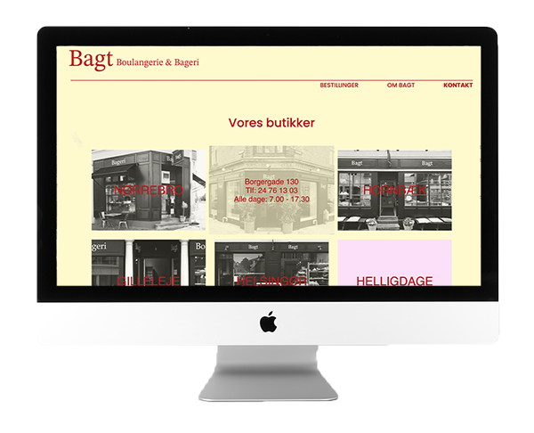

Redesign
I opgave 05.02.01 Redesign og temadokumentation arbejdede vi med virksomheden Bagt. Ud fra tidligere læring på semesteret kunne vi udarbejde en redesignet hjemmeside med vores helt eget præg. Vi lagde meget vægt på designprocesen, da det var vores hovedformål ved redesignet af Bagts nuværende hjemmeside. Jeg fik i denne opgave også et indblik i gruppearbejde og fordeling af opgaver. For at få det bedste ud af gruppearbejdet benyttede vi gitHub til kodning af hjemmesiden samt trelloboard og SCRUM-møder til at holde styr på arbejdsprocessen.
Besøg hjemmesiden Se procesdokumentation
